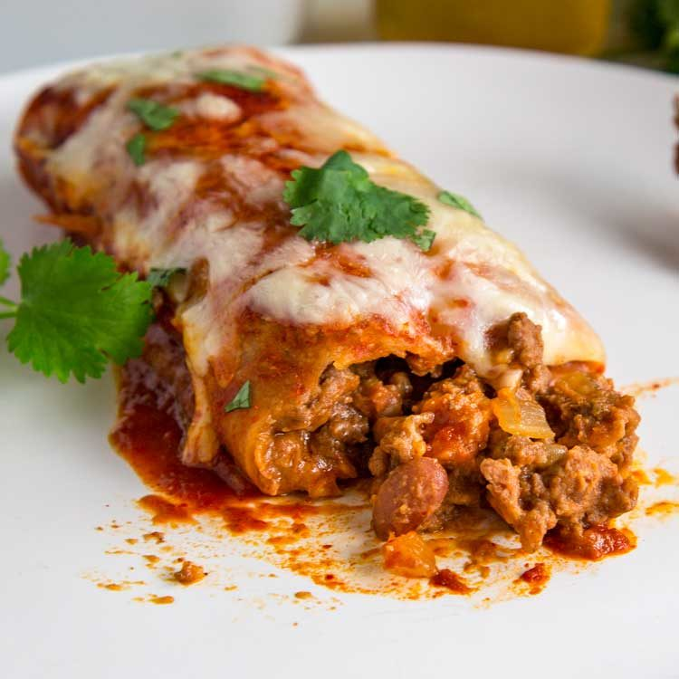

Beef Enchiladas

Description
A delicious version of the popular Mexican dish. These enchiladas are
a mixture of beef and refried beans, wrapped in tortillas, and baked
under layers of cheese and red sauce. Sub these out for your typical
taco night using similar ingredients but a lot more flavor!
Ingredients
- 1 tbsp cumin powder
- 1 tsp dried oregano
- 1 tsp chili seasoning
- 1 tsp garlic powder
- 1 tsp onion powder
- 1 tbsp olive oil
- 1 onion chopped
- 2 cloves garlic minced
- 1 lb ground beef (80/20)
- 2 cups refried beans (See Note 3)
- 4 cups red enchilada sauce
- 8 flour tortillas
- 8 oz shredded Monterey Jack cheese or Pepper Jack
- chopped cilantro for garnish
Steps
- In a small bowl whisk together the spices and set aside. Preheat oven to 350°F.
- Heat oil in a large skillet over high heat. Add onion, cook for 2 minutes.
Add garlic and cook another minute.
- Add ground beef, spices and cook for 2 minutes, breaking up meat as it browns.
Add refried beans and stir to combine. Cook for 2-3 minutes. Set aside to cool slightly.
- Pour some of the enchilada sauce to cover bottom of 13x9″ baking dish.
- Spread 1/3 cup of ground beef filling horizontally across the center of a tortilla,
keeping the filling close to each edge. Next, bring the bottom half of the tortilla
up and over the top of the filling. Then roll the enchilada up into a nice package.
TIP: Don't roll the enchilada up too tightly or the tortilla could tear.
- Place the rolled enchilada seam side down into the sauce on the bottom of the
casserole dish. Repeat until 8 nice sized ground beef enchiladas are in the pan.
- Top with the remaining enchilada sauce and shredded Monterey jack cheese and
cover with aluminum foil to bake 15 minutes.
- Remove foil and bake another 10 minutes uncovered. Serve with chopped cilantro
sprinkled on top.